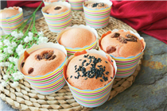

โซเดียมไตรพอลิฟอสเฟต (STPP)
CAS: 7758-29-4
STPP เกรดอาหารสำหรับจัดการความชื้นและเนื้อสัมผัสในการแปรรูปเนื้อและอาหารทะเล เปรียบเทียบข้อกำหนดกับสูตรและข้อกำหนดตลาดของคุณ
การแปรรูปเนื้อ การแปรรูปอาหารทะเล ฟอสเฟตอาหาร ดูผลิตภัณฑ์Bespring Chemical
ค้นหาวัตถุดิบตามการใช้งานในอาหาร อาหารสัตว์ หรือกระบวนการอุตสาหกรรม เมื่อขอใบเสนอราคา โปรดระบุการใช้งาน เกรด ข้อกำหนดคุณภาพ ปริมาณ และสถานที่ส่งมอบ
ชื่อผลิตภัณฑ์ คำย่อ หรือหมายเลข CAS
โซลูชันตามอุตสาหกรรม
สำรวจหน้าที่ส่วนประกอบ คู่มือใช้งาน และกลุ่มผลิตภัณฑ์สำหรับหกอุตสาหกรรม แต่ละภาคมีข้อกำหนดเกรดและคุณลักษณะของตน

เนื้อสัมผัส อายุเก็บ การอุ้มน้ำ และความคงตัวสูตร
สำรวจโซลูชันส่วนประกอบอาหาร
แหล่งแร่ธาตุและสารเติมสำหรับจัดหาอาหารสัตว์และพรีมิกซ์
สำรวจส่วนประกอบโภชนาการสัตว์
สารเสริมประสิทธิภาพ สารคีเลต และสารช่วยสมรรถนะสำหรับระบบทำความสะอาด
สำรวจส่วนประกอบทำความสะอาด
ควบคุมตะกรัน ลดความกระด้าง และปรับสภาพน้ำกระบวนการ
สำรวจสารเคมีบำบัดน้ำ
สารเคมีกระบวนการที่ช่วยการแยกและปรับสภาพแร่
สำรวจสารเคมีสำหรับกระบวนการเหมืองแร่
สารอาหารและวัตถุดิบสำหรับผลิตปุ๋ย
สำรวจส่วนประกอบปุ๋ยกลุ่มผลิตภัณฑ์หลัก
เลือกดูผลิตภัณฑ์หกหมวด ส่วนประกอบอาหารที่แนะนำด้านล่างเชื่อมไปยังข้อมูลเฉพาะเกรด สำหรับอาหารสัตว์และอุตสาหกรรมให้ดูหน้าหมวดผลิตภัณฑ์
CAS: 7758-29-4
STPP เกรดอาหารสำหรับจัดการความชื้นและเนื้อสัมผัสในการแปรรูปเนื้อและอาหารทะเล เปรียบเทียบข้อกำหนดกับสูตรและข้อกำหนดตลาดของคุณ
การแปรรูปเนื้อ การแปรรูปอาหารทะเล ฟอสเฟตอาหาร ดูผลิตภัณฑ์CAS: 10124-56-8
โซเดียมพอลิฟอสเฟตเกรดอาหารใช้จับไอออนและคงตัวสูตร ทบทวนเกรดเชิงพาณิชย์และข้อกำหนดสำหรับงานแปรรูปอาหารของคุณ
การแปรรูปอาหาร การจับไอออน ความคงตัวของสูตร ดูผลิตภัณฑ์CAS: 7320-34-5
โพแทสเซียมไพโรฟอสเฟตเกรดอาหารสำหรับงานอาหารที่อนุญาตซึ่งต้องการบัฟเฟอร์ จับไอออน หรือทำอิมัลชัน เลือกเกรดผ่านการทดลองสูตร
การแปรรูปอาหาร การบัฟเฟอร์ การจับไอออน ดูผลิตภัณฑ์SALP ชนิดกรด · INS 541(i)
SALP ชนิดกรดเป็นกรดช่วยขึ้นฟูเกรดอาหาร ใช้ร่วมโซเดียมไบคาร์บอเนตในระบบอบ เปรียบเทียบค่าการสะเทินและพฤติกรรมปฏิกิริยาให้เหมาะกับกระบวนการของคุณ
เบเกอรี กรดช่วยขึ้นฟู ระบบการอบ ดูผลิตภัณฑ์CAS: 7757-93-9
ไดแคลเซียมฟอสเฟตแอนไฮดรัสเกรดอาหารสำหรับเลือกส่วนประกอบแคลเซียมและฟอสฟอรัสและงานปรับปรุงโด เปรียบเทียบเกรดไดไฮเดรตที่แยกต่างหากเมื่อเกี่ยวข้อง
DCP แอนไฮดรัส การใช้งานในอาหาร แคลเซียมฟอสเฟต ดูผลิตภัณฑ์CAS: 10031-30-8
โมโนแคลเซียมฟอสเฟตโมโนไฮเดรตเกรดอาหารเป็นกรดขึ้นฟูสำหรับระบบอบ ใช้ร่วมโซเดียมไบคาร์บอเนต จับคู่เกรดกับสภาวะผสมและอบ
โมโนไฮเดรต เบเกอรี กรดช่วยขึ้นฟู ดูผลิตภัณฑ์CAS: 9004-32-4
โซเดียมคาร์บอกซีเมทิลเซลลูโลสเกรดอาหารเป็นสารเพิ่มความข้นและคงตัว เปรียบเทียบข้อกำหนดความหนืด ระดับการแทนที่ และการกระจายตัวสำหรับสูตรอาหารที่ตั้งใจ
การเพิ่มความข้นอาหาร การทำให้คงตัว ไฮโดรคอลลอยด์ ดูผลิตภัณฑ์CAS: 4075-81-4
แคลเซียมโพรพิโอเนตเกรดอาหารใช้ควบคุมราในขนมปังและเบเกอรีอื่น สมรรถนะขึ้นกับสูตร กระบวนการ บรรจุภัณฑ์ และสภาวะเก็บ
เบเกอรี ขนมปัง การควบคุมรา ดูผลิตภัณฑ์ความเชี่ยวชาญหลัก
เปรียบเทียบกลุ่มฟอสเฟตตามเอกลักษณ์เคมี เกรด หน้าที่ และการใช้ Bespring สนับสนุนการจับคู่ข้อกำหนดและพิจารณาคุณสมบัติผลิตภัณฑ์สำหรับผู้แปรรูป ผู้จัดสูตร และผู้จัดจำหน่าย
สนับสนุนการจัดซื้อ
แจ้งผลิตภัณฑ์ เกรด ข้อกำหนดสำคัญ ปริมาณ และปลายทาง ทีมส่งออกของเราสามารถประสานข้อมูลผลิตภัณฑ์และรายละเอียดจัดส่งที่จำเป็นสำหรับใบเสนอราคา
เปรียบเทียบปริมาณสาร ขีดจำกัดสิ่งเจือปน ขนาดอนุภาค pH รูปแบบกายภาพ และวิธีทดสอบกับข้อกำหนดเป้าหมาย
ขอข้อกำหนดหรือ TDS ฉบับปัจจุบัน SDS ตัวอย่าง COA และเอกสารคุณภาพหรือกฎระเบียบที่เกี่ยวข้อง
กำหนดการใช้งานที่ตั้งใจและเกณฑ์ประเมิน เพื่อให้ตัวอย่างเป็นตัวแทนเกรดที่กำลังพิจารณาคุณสมบัติ
ยืนยันขนาดบรรจุ ข้อกำหนดพาเลตหรือตู้ ท่าเรือปลายทาง Incoterm และเอกสารจัดส่งที่ต้องการ
ตรวจสอบรูปทางเคมี จุดประสงค์การใช้ ค่าที่กำหนด และวิธีทดสอบ ค้นหาด้วยชื่อ ชื่อย่อ หรือเลข CAS
ระบุผลิตภัณฑ์ การใช้งาน เกรด ปริมาณโดยประมาณ บรรจุภัณฑ์ สถานที่ส่งมอบ และเอกสารที่ต้องใช้ ขอใบเสนอราคา
Bespring Chemical ก่อตั้งเมื่อ ค.ศ. 2014 ที่มณฑลเจียงซู ประเทศจีน หากกำหนดแหล่งกำเนิดสินค้าหรือมีข้อกำหนดคุณภาพเฉพาะ โปรดระบุในคำขอซื้อ ข้อมูลบริษัท
ระบุสถานที่ส่งมอบหรือท่าเรือปลายทาง รูปแบบบรรจุภัณฑ์ และเอกสารที่ต้องใช้ คู่มือจัดซื้อระหว่างประเทศ
เปรียบเทียบสถานที่ผลิตหรือบรรจุที่เสนอไว้กับเอกสารของเกรดนั้น เมื่อรับสินค้าให้ตรวจเลขล็อตบนบรรจุภัณฑ์เทียบกับใบรับรองผลการวิเคราะห์ การตรวจสอบแหล่งผลิต · เอกสารคุณภาพ
ความรู้ด้านการใช้งาน
สำรวจคู่มือเลือกส่วนประกอบและกระบวนการสำหรับอาหาร อาหารสัตว์ บำบัดน้ำ และอุตสาหกรรม ใช้เป็นกรอบเปรียบเทียบสินค้าและการทดลองของคุณเอง

โซเดียมไตรพอลิฟอสเฟต · INS 451(i)
การใช้ฟอสเฟตในทางปฏิบัติเพื่อจัดการความชื้น ส่งเสริมเนื้อสัมผัส ความคงตัวอิมัลชัน และการแปรรูปสม่ำเสมอในผลิตภัณฑ์เนื้อและสัตว์ปีก
อ่านคู่มือใช้งาน
เตตระโพแทสเซียมไพโรฟอสเฟต · INS 450(v)
หน้าที่ฟอสเฟตฐานโพแทสเซียมสำหรับสูตรอาหารทะเลที่อนุญาต ซึ่งต้องการบัฟเฟอร์ จับไอออน และจัดการความชื้น
อ่านคู่มือใช้งาน
แคลเซียมโพรพิโอเนต · E282
การใช้สารกันเสียที่มุ่งควบคุมราและวางแผนอายุเก็บสำหรับขนมปัง โรล และเบเกอรีขึ้นฟูด้วยยีสต์อื่น
อ่านคู่มือใช้งาน
โมโนแคลเซียมฟอสเฟต · เกรดอาหารสัตว์
การใช้แร่ธาตุอาหารสัตว์เพื่อให้ฟอสฟอรัสที่ใช้ประโยชน์ได้และแคลเซียมในอาหารสัตว์ปีกและระบบพรีมิกซ์
อ่านคู่มือใช้งาน
โซเดียมเฮกซะเมทาฟอสเฟต · CAS 10124-56-8
การใช้บำบัดน้ำโดยอาศัยการจับไอออนและผลยับยั้งที่ระดับต่ำเพื่อสนับสนุนโปรแกรมควบคุมตะกรันในระบบอุตสาหกรรม
อ่านคู่มือใช้งาน
โซเดียมไตรพอลิฟอสเฟต · เกรดเทคนิค
การใช้สารเสริมประสิทธิภาพในสารซักล้าง เพื่อช่วยลดความกระด้างน้ำ แขวนลอยสิ่งสกปรก และเพิ่มสมรรถนะทำความสะอาดในสูตรผง
อ่านคู่มือใช้งานSTPP · SHMP · TSPP · TKPP · สูตรผสม
กรอบทดลองในโรงงานที่วัดด้วยผลผลิตสุทธิ การสูญเสียหลังละลาย การสูญเสียจากการปรุง และคุณภาพประสาทสัมผัส
อ่านคู่มือใช้งานSAPP · SALP · MCP · DAP · สูตรผสม
จับคู่อัตราปฏิกิริยา ค่าการสะเทิน และจังหวะปล่อยก๊าซกับการผสม การพัก และการอบ
อ่านคู่มือใช้งาน
DSP · DKP · MKP · TKP · กรดฟอสฟอริก
การคัดกรองสูตรด้านควบคุม pH ความคงตัวต่อความร้อน การทำอิมัลชัน เป้าหมายโซเดียม และอายุเก็บ
อ่านคู่มือใช้งาน
TCP · DCP · MCP · MKP
เลือกแร่ฟอสเฟตตามปริมาณธาตุ ความบริสุทธิ์ ขนาดอนุภาค การกระจายตัว และสมรรถนะ
อ่านคู่มือใช้งานคำแนะนำจัดหาที่อิงข้อกำหนด สำหรับจัดซื้อสารเคมีอาหาร อาหารสัตว์ และอุตสาหกรรม
เปรียบเทียบ STPP และ SHMP ตามเอกลักษณ์เคมี หน้าที่ เกรด ข้อกำหนด รูปแบบกายภาพ และข้อกำหนดพิจารณาคุณสมบัติผู้ขาย
อ่านคู่มือฉบับเต็ม →เปรียบเทียบเอกลักษณ์สารอาหาร ปริมาณสาร รูปแบบกายภาพ ขีดจำกัดสารปนเปื้อน และเอกสารเมื่อจัดหา MCP หรือ DCP
เรียนรู้เพิ่มเติม →ตรวจให้ข้อกำหนด SDS, COA ใบรับรอง ฉลาก และเอกสารขนส่งสอดคล้องกันก่อนสั่งซื้อสารเคมีระหว่างประเทศ
เรียนรู้เพิ่มเติม →ทำความเข้าใจว่าเกรด ข้อกำหนด ขีดจำกัดสิ่งเจือปน การควบคุมผลิต และความเหมาะสมตลาดเปลี่ยนฐานการอนุมัติอย่างไร
เรียนรู้เพิ่มเติม →คำถามที่พบบ่อย
ดูรูปทางเคมีและการใช้งานใน รายการฟอสเฟต จากนั้นเปรียบเทียบข้อกำหนดและวิธีทดสอบของเกรดที่ต้องการ
ระบุผลิตภัณฑ์ การใช้งาน เกรด ข้อกำหนดคุณภาพ ปริมาณโดยประมาณ บรรจุภัณฑ์ และสถานที่ส่งมอบ หากต้องการตัวอย่าง ให้แจ้งวัตถุประสงค์และเกณฑ์การทดสอบด้วย